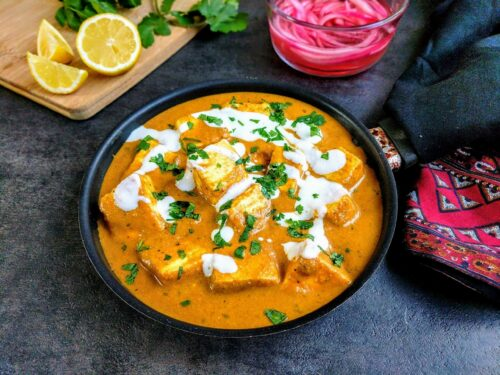

Recipe for panner-butter-masala

Discription for this dish
aneer Butter Masala
This is a basic paneer butter masala recipe that you
get in most Indian restaurants. This dish goes well with either rice or naan.
Ingredients used in panner-butter-masala
- ½ cup vegetable oil
- ½ pound paneer, cut into 1/2-inch cubes
- 2 tablespoons butter
-
2 onions, finely chopped
-
1 teaspoon garlic paste
-
½ cup half-and-half
-
½ cup milk
-
½ teaspoon white sugar
-
½ teaspoon salt
Steps to make this dish
- Heat oil in a large skillet over medium heat; fry paneer in batches until golden, about 5 minutes. Transfer fried paneer to a paper towel-lined plate to drain, retaining vegetable oil in skillet.
- Melt butter in the same skillet over medium heat; cook and stir onion until golden brown, about 10 minutes. Add ginger paste and garlic paste. Continue to cook until fragrant, about 1 minute more. Stir cashews, ground red chiles, cumin, coriander, and garam masala into the onion mixture. Cook and stir for 1 minute. >
- Stir tomato sauce, half-and-half, milk, sugar, and salt into spice mixture; simmer until thickened, about 5 minutes. Reduce heat to low. Add fried paneer and simmer until heated through, about 5 minutes more.